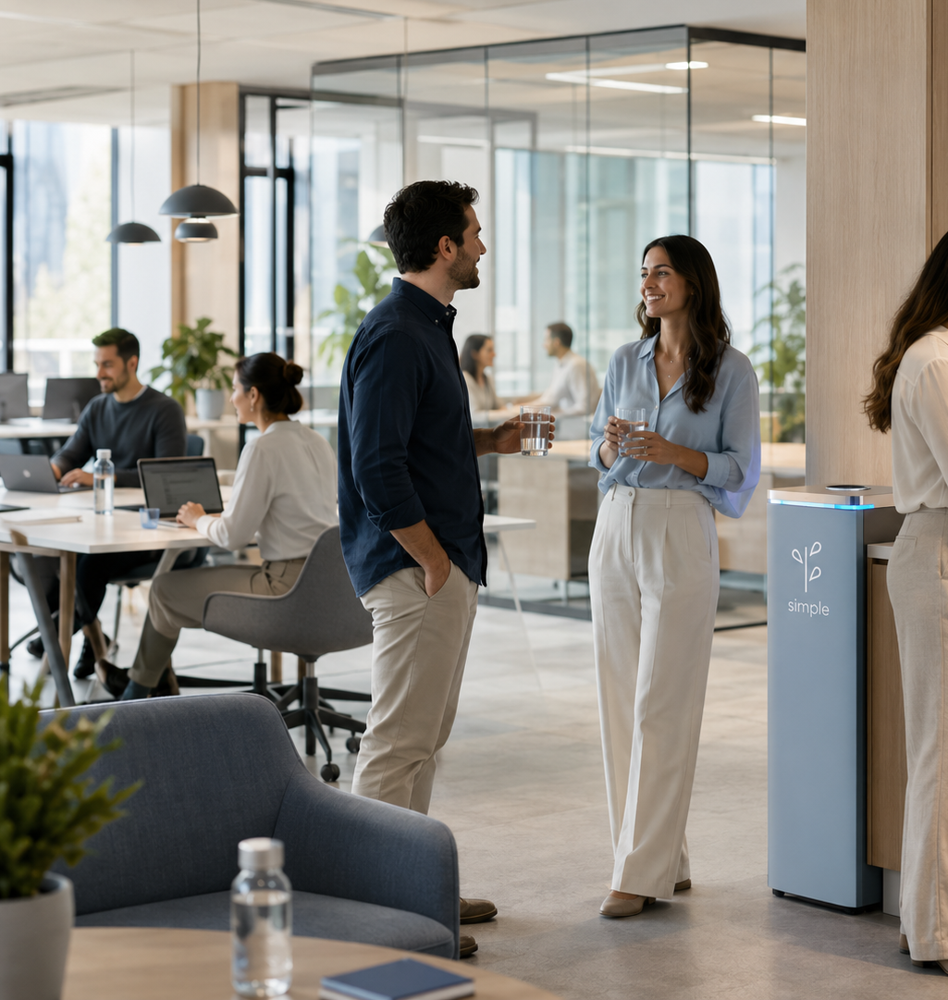

Oficinas y corporativos
Soluciones para equipos de trabajo, salas, amenidades y consumo diario.
SIMPLE puede adaptarse a oficinas, comercios, comunidades, desarrollos e instituciones. La propuesta se define por tipo de espacio, consumo esperado, operación y necesidades de atención.

Soluciones para equipos de trabajo, salas, amenidades y consumo diario.
Atención para espacios compartidos con necesidad de continuidad y soporte.
Planes ajustados a recurrencia, volumen y uso operativo.
Diagnóstico para definir equipo, instalación, mantenimiento y seguimiento.
